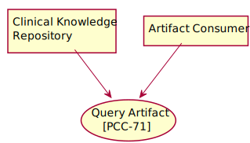
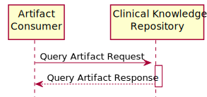

IHE ACDC Implementation Guide
0.1.0 - CI Build
IHE ACDC Implementation Guide
0.1.0 - CI Build
IHE ACDC Implementation Guide, published by Integrating the Healthcare Enterprise (IHE). This is not an authorized publication; it is the continuous build for version 0.1.0). This version is based on the current content of https://github.com/IHE/ACDC/ and changes regularly. See the Directory of published versions
This section describes the PCC-71 Query Artifact transaction of the IHE PCC Technical Framework. This transaction is used by the Clinical Knowledge Resource Repository and Artifact Consumer Actors Actors.
This section corresponds to Transaction PCC-71 of the IHE PCC Technical Framework. Transaction PCC-71 is used by the Clinical Knowledge Resource Repository and Artifact Consumer Actors.
The Query Artifact transaction is used to query for assessment instruments in Questionnaires that satisfy a set of parameters by using the FHIR framework. The result of the query is a FHIR Bundle containing FHIR clinical data Resources that match the query parameters.
The ACDC Profile assumes that categories and codes referenced by these FHIR Resources need to be defined at the time of deployment. The specification of these FHIR Resources make recommendations on categories and codes, that should be considered.

Figure 3.71.2-1: Use Case Diagram
| Actor | Role |
|---|---|
| Artifact Consumer | Queries the Clinical Knowledge Resource Repository for assessment instrument content requested by the Artifact Consumer. |
| Clinical Knowledge Resource Repository | Responds to query, supplying the FHIR Questionnaire Resources representing the assessment instrument content that match the search criteria provided by the Artifact Consumer. |
| Standard | Name |
|---|---|
| HL7 FHIR | HL7® FHIR#174 standard R4 |
| IETF RFC 2616 | Hypertext Transfer Protocol - HTTP/1.1 |
| IETF RFC 7540 | Hypertext Transfer Protocol - HTTP/2 |
| IETF RFC 3986 | Uniform Resource Identifier (URI): Generic Syntax |
| IETF RFC 4627 | The application/json Media Type for JavaScript Object Notation (JSON) |
| IETF RFC 6585 | Additional HTTP Status Codes |

This message uses the HTTP GET method parameterized query to retrieve FHIR Questionnaire Resources representing assessment instruments matching search parameters in the GET request. This transaction performs a FHIR search request on Questionnaire resources.
ACDC does not mandate any additional extended or custom method.
When the Artifact Consumer needs to discover Questionnaire Resources matching various search parameters it issues a Query Artifact message.
The Artifact Consumer executes an HTTP GET against the proper Clinical Knowledge Resource Repository’s ACDC URL.
The search target follows the FHIR http specification (http://hl7.org/fhir/R4/http.html), addressing the proper FHIR Resource type, according to the supported query options (see Section 3.71.4.1.2.1). The syntax of the FHIR query is:
GET [base]/Questionnaire?[parameters]
with the following constraints:
The [base] represents the Service Base URL
The [parameters] represents a series of encoded name-value pairs representing the filter for the query, as specified in Section 3.71.4.1.2.1, as well as control parameters to modify the behavior of the Clinical Knowledge Resource Repository such as response format, or pagination. See [ITI TF-2x: Appendix Z.6}(appendixz.html#Z6) for more details on response format.
The Questionnaire resources returned by this transaction shall conform to FHIR requirements associated with the IHE and need only include fields in the Questionnaire resource marked as being for summaries.
All query parameter values shall be appropriately encoded per RFC 3986 “percent” encoding rules. Note that percent encoding does restrict the character set to a subset of ASCII characters which is used for encoding all other characters used in the URL.
The Clinical Knowledge Resource Repository must support the following set of searches:
A query based on the content of the Assessment instrument that supports any combination of the following search parameters:
A query based on the canonical url of the Assessment instrument.
The Clinical Knowledge Resource Repository may choose to support additional query parameters beyond the subset defined by the profiling listed below, if done according to the core FHIR specification. Such additional parameters are considered out of scope for this transaction. The Clinical Knowledge Resource Repository may ignore any additional parameter not specified in this transaction. See http://hl7.org/fhir/R4/search.html#errors.
The FHIR standard provides encodings for responses as either XML or JSON. The Clinical Knowledge Resource Repository shall support both message encodings, whilst the Artifact Consumer shall support one and may support both.
See ITI TF-2x: Appendix Z.6 for details.
The Artifact Consumer shall send a query to a Clinical Knowledge Resource Repository.
The Clinical Knowledge Resource Repository shall process the query to discover Questionnaire FHIR Resource entries (the assessment instruments) that match the search parameters given and shall use a FHIR Bundle resource to collect the matching entries to be returned. The Clinical Knowledge Resource Repository shall respond with a Mobile Artifact Query Response synchronously (i.e., on the same connection as was used to initiate the request). See ITI TF-2x: Appendix Z.6 for more details on response format handling. See ITI TF-2x: Appendix Z.7 for handling guidance for Access Denied.
Based on the query results, the Clinical Knowledge Resource Repository will either return an error or success. The guidance on handling Access Denied related to use of 200, 403 and 404 can be found in ITI TF-2x: Appendix Z.7 (reproduced here for readability).
When the Clinical Knowledge Resource Repository needs to report an error, it shall use HTTP error response codes and should include a FHIR OperationOutcome with more details on the failure. See FHIR http://hl7.org/fhir/R4/http.html and http://hl7.org/fhir/R4/operationoutcome.html.
If the Query Artifact request message is processed successfully, whether or not Questionnaire Resources are found, the HTTP status code shall be 200.
The Query Artifact Response message shall be a FHIR Bundle Resource containing zero or more Questionnaire resources conforming to the ACDC Questionnaire profile in 6.6.107.1. The response shall adhere to the FHIR Bundle constraints specified in [ITI TF-2x: Appendix Z.1}(appendixz.html#Z1).
This message uses the HTTP GET method to retrieve an individual FHIR Questionnaire Resource. This transaction performs a FHIR read request on Questionnaire resources.
When the Artifact Consumer needs to read Questionnaire Resources it issues a Read Artifact message.
The Artifact Consumer executes an HTTP GET against the proper Clinical Knowledge Resource Repository’s ACDC URL.
The search target follows the FHIR http specification (http://hl7.org/fhir/R4/http.html), addressing the proper FHIR Resource type. The syntax of the FHIR read is:
GET [base]/Questionnaire/{id}
where {id} is the internal identifier of the Questionnaire resource as known by the Clinical Knowledge Resource Repository.
The FHIR standard provides encodings for responses as either XML or JSON. The Clinical Knowledge Resource Repository shall support both message encodings, whilst the Artifact Consumer shall support one and may support both.
See ITI TF-2x: Appendix Z.6 for details.
The Artifact Consumer shall send read artifact request to a Clinical Knowledge Resource Repository.
The Clinical Knowledge Resource Repository will either return an error or success. The guidance on handling Access Denied related to use of 200, 403 and 404 can be found in ITI TF-2x: Appendix Z.7 (reproduced here for readability).
On success, the Clinical Knowledge Resource Repository will return
Clinical Knowledge Resource Repositories implementing this transaction should provide a CapabilityStatement Resource as described in ITI TF-2x: Appendix Z.3 indicating the query operation for the Resources have been implemented and shall include all the supported query parameters.
The retrieved content contains IP that shall be protected. See the general Security Considerations in PCC TF-1: 15.5.
Grouping a Clinical Knowledge Resource Repository with an ATNA Secure Node or Secure Application is recommended. Grouping an Artifact Consumer with an ATNA Secure Node or Secure Application is recommended.
The Artifact Consumer may be considered overburdened to fully implement the requirements of a Secure Node or Secure Application. The Clinical Knowledge Resource Repository is likely a more robust application and should generate audit messages.
When grouped with the Secure Node or Secure Application actor, both actors generate a “Query” Audit Message, which is consistent with ATNA. The Query Artifact [PCC-71] is a Query Information event as defined in Table ITI TF-2:3.20.4.1.1.1-1. The message shall comply with the IHE ACDC Query Artifact Audit Event profile, represented by following pattern:
IG © 2020+ Integrating the Healthcare Enterprise (IHE). Package IHE-ACDC-Profile#0.1.0 based on FHIR 4.0.1. Generated 2020-05-03
Links: Table of Contents |
QA Report
Links: Table of Contents |
QA Report |
Version History  |
|
 |
Propose a change
|
Propose a change